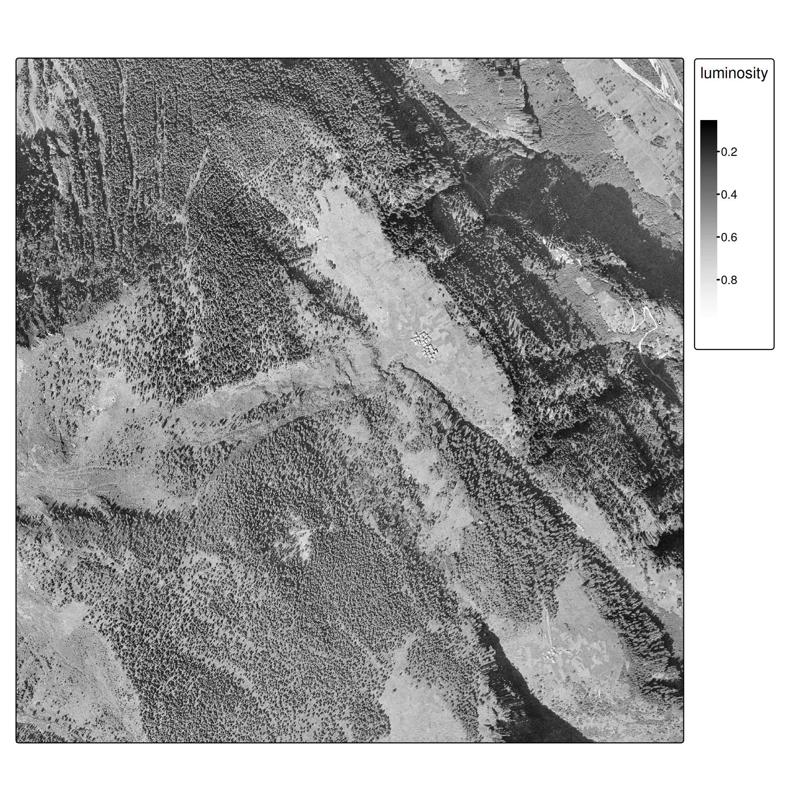
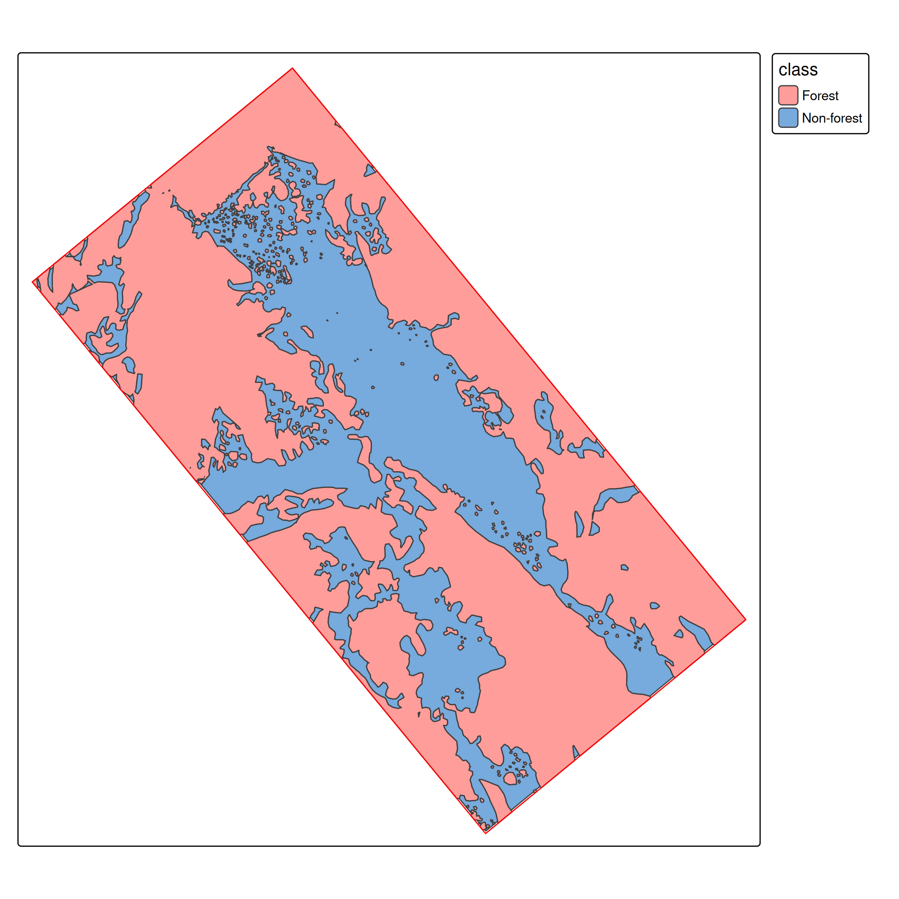
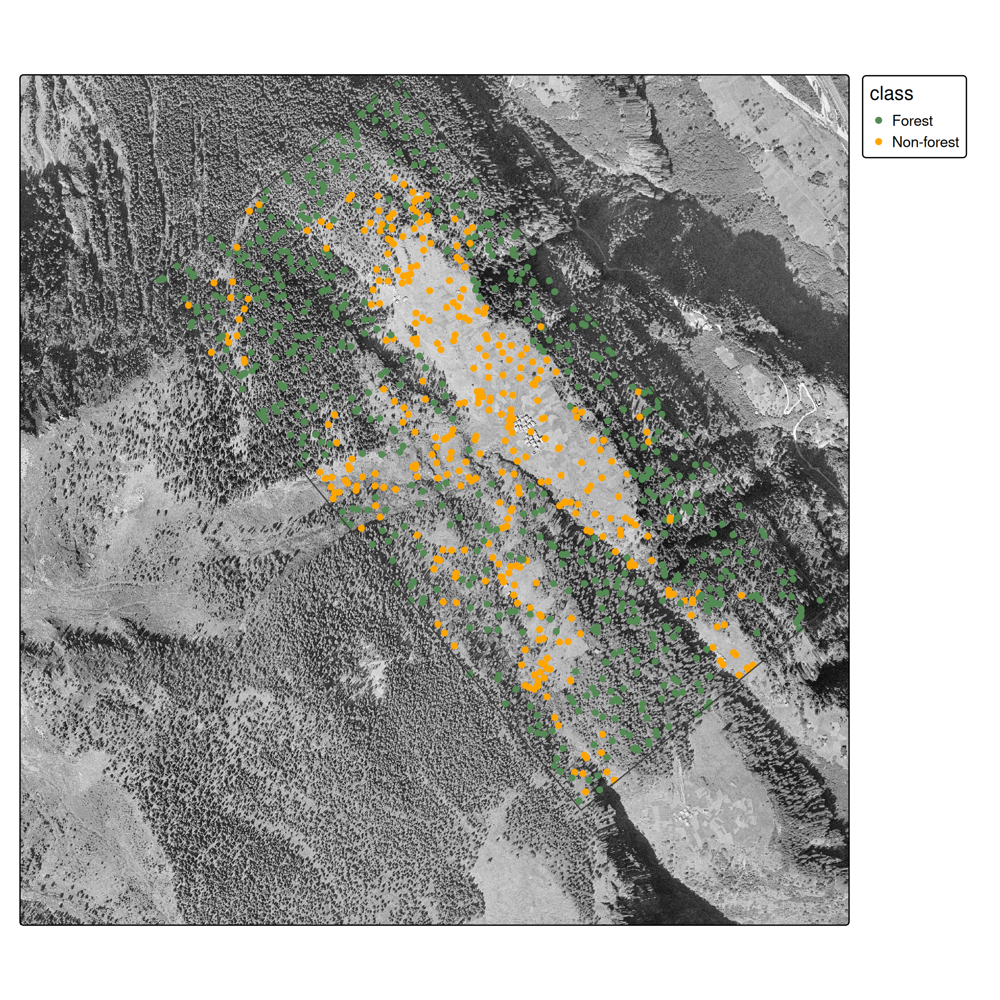
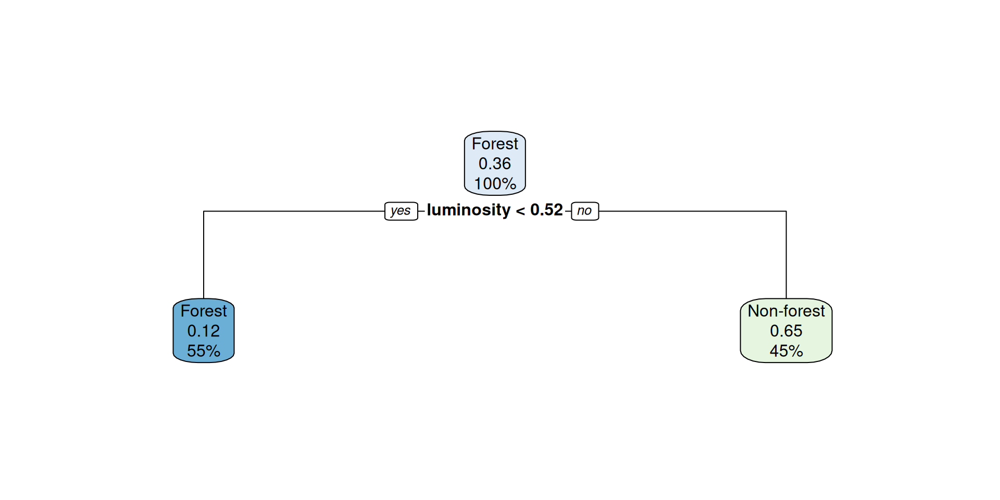
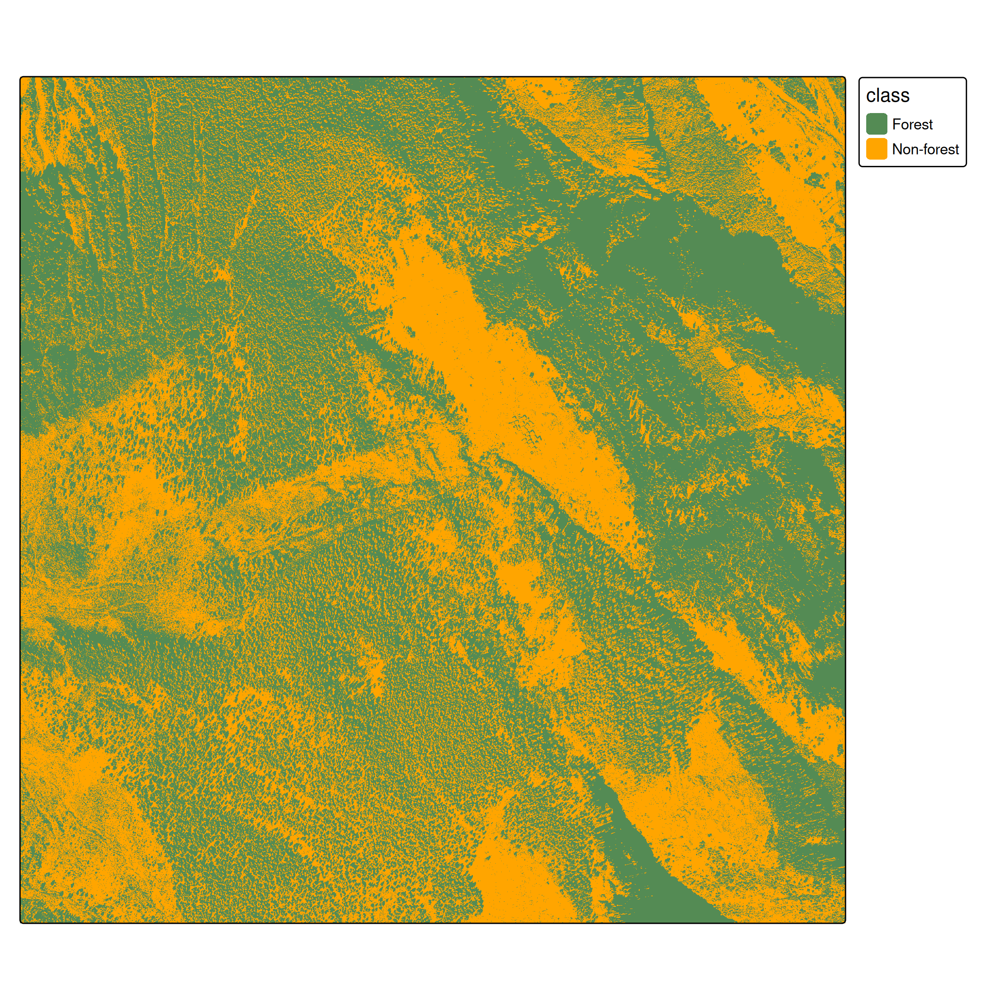
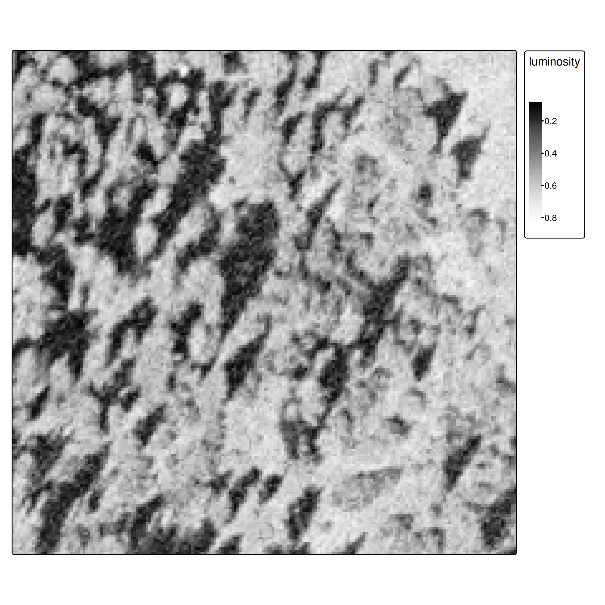
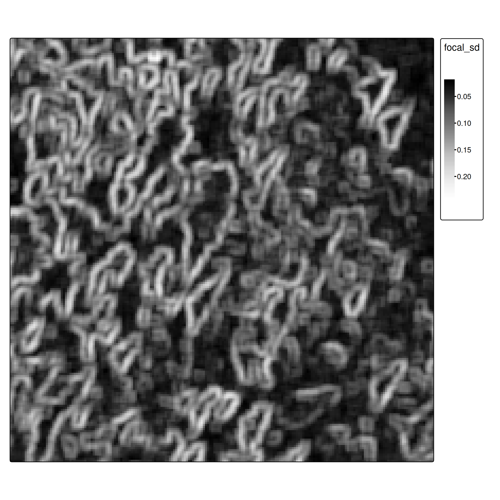
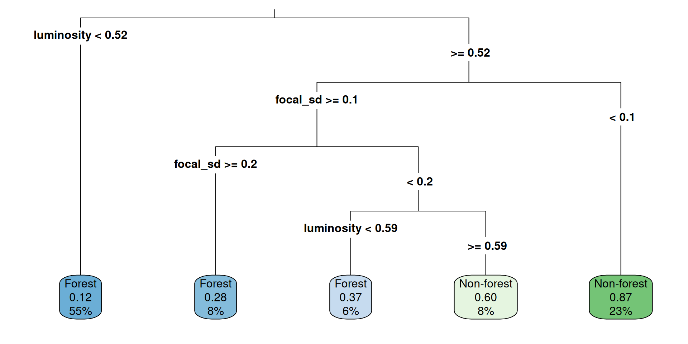

By the end of this lesson you will be able to:

extract()Unlike standard ML datasets, our ground truth comes as spatial polygons.

We need point samples for training:

Sample points from forest (green) and non-forest (orange) polygons
st_sample() draws random points within each polygon geometry.
st_join() does a spatial left join — for each point it finds the polygon that contains it and copies over the attributes (class, etc.).
Result: an sf data frame where every row is a labelled point with known coordinates.
Important
Spatial autocorrelation issue: Random splits violate independence assumptions because nearby pixels are correlated. Proper approaches use spatial cross-validation (Brenning 2023; Schratz et al. 2021). We use random splits here for simplicity, but be aware this may overestimate performance.
set.seed() makes the result reproducibleterra::extract() samples raster values at each point location:
# A tibble: 10 × 2
class luminosity
<fct> <dbl>
1 Non-forest 0.635
2 Forest 0.208
3 Forest 0.396
4 Forest 0.298
5 Forest 0.129
6 Non-forest 0.698
7 Forest 0.0863
8 Non-forest 0.741
9 Forest 0.325
10 Forest 0.275 After feature extraction, the spatial complexity is gone — we have a plain data frame:
| class | luminosity |
|---|---|
| Forest | 0.38 |
| Non-forest | 0.74 |
| Forest | 0.41 |
| … | … |
From here, any standard ML algorithm applies. The spatial awareness is only needed again at prediction time, when we apply the model back to the full raster.
We use CART (decision trees) for interpretability. As experienced ML practitioners, feel free to substitute with Random Forest, XGBoost, etc.

Figure 1: Decision tree for single-band classification
terra::predict() worksConceptually: iterate over every pixel, build a one-row data frame of its values, call predict(model, newdata = ...), write the result back.
for each pixel (i, j):
features <- extract value(s) at (i, j)
probs <- predict(model, newdata = features, type = "prob")
output[i, j] <- probspredict(raster, model, type = "prob"): one layer per class, values = probabilitieswhich.max() returns an integer raster: which layer has the highest probability?which.max() returns integers (1, 2, …). To get meaningful labels:

Classification result — single band approach
Before showing the numbers: how to read a confusion matrix
| Actual: Forest | Actual: Non-forest | |
|---|---|---|
| Predicted: Forest | TP | FP |
| Predicted: Non-forest | FN | TN |
Actual
|
||
|---|---|---|
| Forest | Non-forest | |
| Forest | 137 | 22 |
| Non-forest | 55 | 87 |
Overall accuracy: 0.74

Figure 2
Focal operations aggregate neighborhood values, providing spatial context:

When combining features with different scales, normalize to [0, 1] using min-max scaling:
\[x' = \frac{x - \min(x)}{\max(x) - \min(x)}\]
minmax_normalization <- function(x){
minmax_vals <- minmax(x)[,1]
(x - minmax_vals[1]) / (minmax_vals[2] - minmax_vals[1])
}
ces1961_focal_sd <- minmax_normalization(ces1961_focal_sd)
# Stack: now a 2-band raster
ces_multi <- c(ces1961, ces1961_focal_sd)
names(ces_multi) <- c("luminosity", "focal_sd")Why normalize? Decision trees are invariant to scale, but other algorithms (SVM, KNN, neural networks) are not. It’s good practice regardless.
The call is identical — rpart just sees more columns now:

Figure 4: Decision tree now uses both luminosity and spatial texture
Actual
|
||
|---|---|---|
| Forest | Non-forest | |
| Forest | 175 | 37 |
| Non-forest | 17 | 72 |
Overall accuracy: 0.82 (vs. 0.74 without spatial features)
| Features | Overall accuracy | |
|---|---|---|
| Approach 1 | luminosity | 0.74 |
| Approach 2 | luminosity + focal SD | 0.82 |
The texture feature captures local variation — forest canopy looks rougher at 0.5 m resolution than agricultural fields or roads.
One extra focal operation nearly free-rides on the existing workflow — same model, same extraction, same prediction step.
For advanced applications, consider: